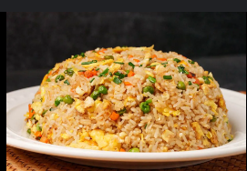

Chicken Fried Rice
⭐⭐⭐⭐☆
4.4 (220 reviews)

Ingredients
Chawal (Rice) 2 Cups (soaked & boiled)
Oil 2 tbs
Anday (Egg) beaten 2
Gajar (Carrot) finely chopped ¾ Cup
Bund gobhi (Cabbage) finely chopped ¾ Cup
Safed mirch powder (White pepper powder) ½ tsp
Chicken powder 1 tsp
Cheeni (Sugar) 1 tsp
Namak (Salt) 1 tsp or to taste
Hara pyaz (Green onion) leaves chopped ¾ Cup
Til ka tel (Sesame oil) 1 tsp
Directions
On tray,spread boiled rice,and let them cool & set aside.
In wok,add oil,eggs and mix well.
Add carrots,cabbage and mix well for 1-2 minutes.
Add boiled rice,mix & toss well.
Add white pepper powder,chicken powder,sugar,salt,green onion and give it a good mix.
Add sesame oil,mix well & serve.
Nutrition Facts
Calories: 350 | Protein: 20g | Carbs: 45g | Fat: 10g